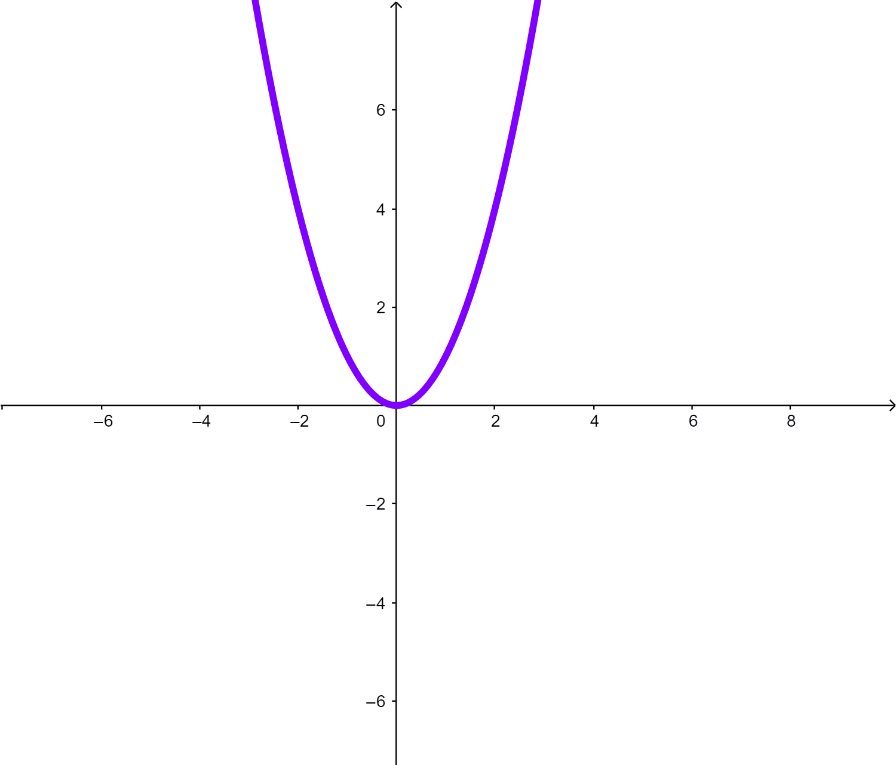

Título de la obra:
Función
Autor:
Laura Reinoso
Código JavaScript para el libro: Joel Espinosa Longi, IMATE, UNAM.
Recursos interactivos: DescartesJS
Fuentes: Lato y UbuntuMono
Fórmulas matemáticas: $\KaTeX$
LICENCIA
 Creative Commons Attribution License 4.0.
Creative Commons Attribution License 4.0.
Tabla de contenido
Definición de Función
Definición de Función
Una función de un conjunto A en otro conjunto B, es una relación que cumple estas dos propiedades.
1. Todo elemento de A tiene una imagen en B.
2. Cada elemento de A tiene UNA y SOLO UNA imagen en B
EjemploA continuación se observa diferentes funciones en el gif, representadas en un plano cartesiano:
Conceptos
Conceptos
Nota
Los conceptos abordados aquí son exactamente los mismos que los de las relaciones.
Aunque en las funciones siempre se cumple que el dominio y el conjunto de partida tienen exactamente los mismos elementos.
Además los elementos del dominio se relacionan a lo sumo con un elemento del conjunto de llegada.
Dominio: Es el conjunto de todos los elementos que hacen parte del conjunto de partida y se encuentran relacionados.
Rango: Es el conjunto de todos los elementos que hacen parte del conjunto de llegada y se encuentran relacionados.
Imagen: Cada elemento $x$ que hace parte del dominio tiene una relación con un elemento en el conjunto de llegada a quien se le llama imagen de $x$.
Preimagen: Cada elemento $y$ que hace parte del rango tiene una relación con un elemento en el conjunto de partida a quien se le llama preimagen de $y$.
Conjunto de partida: Se identifica en el diagrama sagital por ser el conjunto del que salen las flechas. En el plano cartesiano, va a determinar el eje $x$. En la tabla va a ser la columna de la izquierda o de la variable independiente. En la fórmula generalmente se le nombra con la letra $x$.
Conjunto de llegada: Se identifica en el diagrama sagital por ser el conjunto al que llegan las flechas. En el plano cartesiano, va a determinar el eje $y$. En la tabla va a ser la columna de la derecha o de la variable dependiente. En la fórmula generalmente se le nombra con la letra $y$.
Identificación de funciones
Con la definición de función es posible determinar cuando una relación es función y cuándo no lo es. Te invitamos a realizar las actividades dadas a continuación
Debes hacer clic sobre la imagen.

Esta es la segunda y última actividad. De nuevo has clic sobre la imagen.